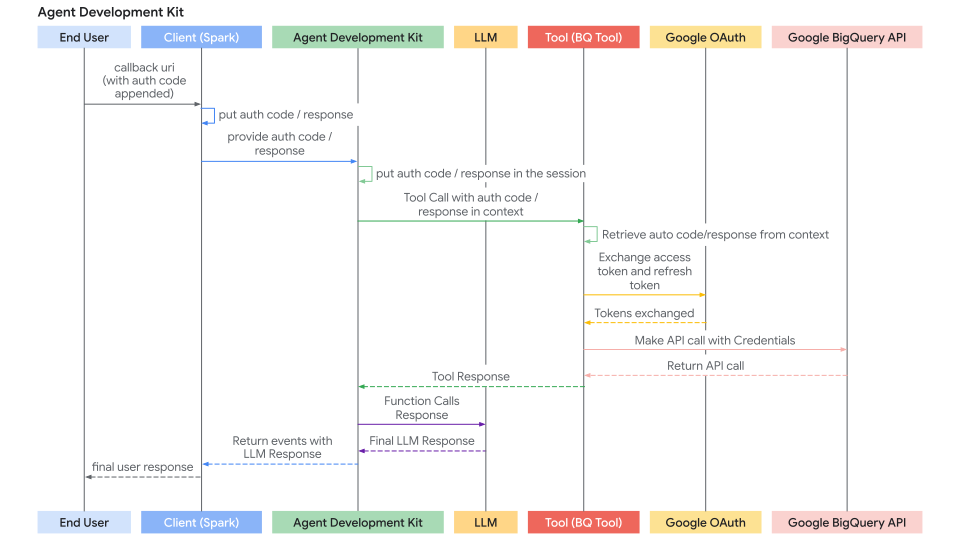

Authenticating with Tools¶
Core Concepts¶
Many tools need to access protected resources (like user data in Google Calendar, Salesforce records, etc.) and require authentication. ADK provides a system to handle various authentication methods securely.
The key components involved are:
AuthScheme: Defines how an API expects authentication credentials (e.g., as an API Key in a header, an OAuth 2.0 Bearer token). ADK supports the same types of authentication schemes as OpenAPI 3.0. To know more about what each type of credential is, refer to OpenAPI doc: Authentication. ADK uses classes likeApiKeyAuthScheme,BearerAuthScheme, and interfaces likeOpenIdConnectWithConfig.AuthCredential: Holds the initial information needed to start the authentication process (e.g., your application's OAuth Client ID/Secret, an API key value). It includes anauthTypeproperty (likeAPI_KEY,OAUTH2,SERVICE_ACCOUNT) specifying the credential type.
The general flow involves providing these details when configuring a tool. ADK then attempts to automatically exchange the initial credential for a usable one (like an access token) before the tool makes an API call. For flows requiring user interaction (like OAuth consent), a specific interactive process involving the Agent Client application is triggered.
Supported Initial Credential Types¶
- API_KEY: For simple key/value authentication. Usually requires no exchange.
- HTTP: Can represent Basic Auth (not recommended/supported for exchange) or already obtained Bearer tokens. If it's a Bearer token, no exchange is needed.
- OAUTH2: For standard OAuth 2.0 flows. Requires configuration (client ID, secret, scopes) and often triggers the interactive flow for user consent.
- OPEN_ID_CONNECT: For authentication based on OpenID Connect. Similar to OAuth2, often requires configuration and user interaction.
- SERVICE_ACCOUNT: For Google Cloud Service Account credentials (JSON key or Application Default Credentials). Typically exchanged for a Bearer token.
Configuring Authentication on Tools¶
You set up authentication when defining your tool:
-
RestApiTool / OpenAPIToolset: Pass
authSchemeandauthCredentialduring initialization -
GoogleApiToolSet Tools: ADK has built-in 1st party tools like Google Calendar, BigQuery etc. Use the toolset's specific configuration method.
-
APIHubToolset / ApplicationIntegrationToolset: Pass
authSchemeandauthCredentialduring initialization, if the API managed in API Hub / provided by Application Integration requires authentication.
WARNING
Storing sensitive credentials like access tokens and especially refresh tokens directly in the session state might pose security risks depending on your session storage backend (SessionService) and overall application security posture.
InMemorySessionService: Suitable for testing and development, but data is lost when the process ends. Less risk as it's transient.- Database/Persistent Storage: Strongly consider encrypting the token data before storing it in the database using a robust encryption library and managing encryption keys securely (e.g., using a key management service).
- Secure Secret Stores: For production environments, storing sensitive credentials in a dedicated secret manager (like Google Cloud Secret Manager or HashiCorp Vault) is the most recommended approach. Your tool could potentially store only short-lived access tokens or secure references (not the refresh token itself) in the session state, fetching the necessary secrets from the secure store when needed.
Journey 1: Building Agentic Applications with Authenticated Tools¶
This section focuses on using pre-existing tools (like those from RestApiTool/ OpenAPIToolset, APIHubToolset, GoogleApiToolSet) that require authentication within your agentic application. Your main responsibility is configuring the tools and handling the client-side part of interactive authentication flows (if required by the tool).
1. Configuring Tools with Authentication¶
When adding an authenticated tool to your agent, you need to provide its required AuthScheme and your application's initial AuthCredential.
A. Using OpenAPI-based Toolsets (OpenAPIToolset, APIHubToolset, etc.)
Pass the scheme and credential during toolset initialization. The toolset applies them to all generated tools. Here are few ways to create tools with authentication in ADK.
Create a tool requiring an API Key.
import { APIHubToolset } from 'adk-typescript';
// Creating an API Key auth scheme
const authScheme = {
type: 'apiKey',
name: 'apikey',
in: 'query'
};
// Creating the credential with the actual API key
const authCredential = {
authType: 'API_KEY',
apiKey: {
apiKey: 'YOUR_API_KEY_STRING'
}
};
// Create the toolset with authentication
const sampleApiToolset = new APIHubToolset({
name: 'sample-api-requiring-api-key',
description: 'A tool using an API protected by API Key',
apihubResourceName: '...',
authScheme: authScheme,
authCredential: authCredential
});
Create a tool requiring OAuth2.
import {
OpenAPIToolset,
AuthCredential,
AuthCredentialTypes,
OAuth2Auth
} from 'adk-typescript';
// Define the OAuth2 auth scheme with flow configuration
const authScheme = {
type: 'oauth2',
flows: {
authorizationCode: {
authorizationUrl: 'https://accounts.google.com/o/oauth2/auth',
tokenUrl: 'https://oauth2.googleapis.com/token',
scopes: {
'https://www.googleapis.com/auth/calendar': 'calendar scope'
}
}
}
};
// Define the initial OAuth2 credentials (client ID and secret)
const authCredential = {
authType: AuthCredentialTypes.OAUTH2,
oauth2: {
clientId: 'YOUR_OAUTH_CLIENT_ID',
clientSecret: 'YOUR_OAUTH_CLIENT_SECRET'
}
};
// Create the OpenAPI toolset with OAuth2 authentication
const calendarApiToolset = new OpenAPIToolset({
specStr: googleCalendarOpenApiSpecStr, // Fill this with an OpenAPI spec
specStrType: 'yaml',
authScheme: authScheme,
authCredential: authCredential
});
Create a tool requiring Google Service Account.
import {
OpenAPIToolset,
AuthCredential,
AuthCredentialTypes
} from 'adk-typescript';
// Parse the service account JSON key file
const serviceAccountCred = JSON.parse(serviceAccountJsonStr);
// Define the auth scheme for service account authentication
const authScheme = {
type: 'http',
scheme: 'bearer'
};
// Configure the service account credential
const authCredential = {
authType: AuthCredentialTypes.SERVICE_ACCOUNT,
serviceAccount: {
credentials: serviceAccountCred,
scopes: ['https://www.googleapis.com/auth/cloud-platform']
}
};
// Create the OpenAPI toolset with service account authentication
const sampleToolset = new OpenAPIToolset({
specStr: serviceAccountOpenApiSpecStr, // Fill this with an OpenAPI spec
specStrType: 'json',
authScheme: authScheme,
authCredential: authCredential
});
Create a tool requiring OpenID Connect.
import {
OpenAPIToolset,
OpenIdConnectWithConfig,
AuthCredential,
AuthCredentialTypes
} from 'adk-typescript';
// Define the OpenID Connect auth scheme
const authScheme = {
type: 'openIdConnect',
authorization_endpoint: 'https://your-endpoint.okta.com/oauth2/v1/authorize',
token_endpoint: 'https://your-endpoint.okta.com/oauth2/v1/token',
scopes: ['openid', 'email', 'profile']
};
// Configure the OAuth2 credentials for OpenID Connect
const authCredential = {
authType: AuthCredentialTypes.OPEN_ID_CONNECT,
oauth2: {
clientId: 'YOUR_CLIENT_ID',
clientSecret: 'YOUR_CLIENT_SECRET'
}
};
// Create the OpenAPI toolset with OpenID Connect authentication
const userinfoToolset = new OpenAPIToolset({
specStr: oidcSpecContent, // Fill with an actual OpenAPI spec
specStrType: 'yaml',
authScheme: authScheme,
authCredential: authCredential
});
B. Using Google API Toolsets (e.g., calendar_tool_set)
These toolsets often have dedicated configuration methods.
Tip: For how to create a Google OAuth Client ID & Secret, see this guide: Get your Google API Client ID
// Example: Configuring Google Calendar Tools
import { GoogleApiToolSet } from 'adk-typescript';
const clientId = 'YOUR_GOOGLE_OAUTH_CLIENT_ID.apps.googleusercontent.com';
const clientSecret = 'YOUR_GOOGLE_OAUTH_CLIENT_SECRET';
// Initialize calendar tools with OAuth2 authentication
const calendarTools = GoogleApiToolSet.calendarTools({
authConfig: {
clientId: clientId,
clientSecret: clientSecret
}
});
// Add the tools to your agent
// agent = new LlmAgent(..., tools: calendarTools.getTools());
The sequence diagram of auth request flow (where tools are requesting auth credentials) looks like below:

2. Handling the Interactive OAuth/OIDC Flow (Client-Side)¶
If a tool requires user login/consent (typically OAuth 2.0 or OIDC), the ADK framework pauses execution and signals your Agent Client application. There are two cases:
- Agent Client application runs the agent directly (via
runner.run()orrunner.runAsync()) in the same process. e.g. UI backend, CLI app, or Spark job etc. - Agent Client application interacts with ADK's Express server via
/runor/run_sseendpoint. While ADK's Express server could be setup on the same server or different server as Agent Client application
The second case is a special case of first case, because /run or /run_sse endpoint also invokes runner.runAsync(). The only differences are:
- Whether to call a TypeScript function to run the agent (first case) or call a service endpoint to run the agent (second case).
- Whether the result events are in-memory objects (first case) or serialized JSON string in HTTP response (second case).
Below sections focus on the first case and you should be able to map it to the second case very straightforward. We will also describe some differences to handle for the second case if necessary.
Here's the step-by-step process for your client application:
Step 1: Run Agent & Detect Auth Request
- Initiate the agent interaction using
runner.runAsync(). - Iterate through the yielded events.
- Look for a specific event that contains a function call with a special name:
adk_request_credential. This event signals that user interaction is needed. You can use helper functions to identify this event and extract necessary information.
import { Runner, Session, Event, Content, isPendingAuthEvent } from 'adk-typescript';
// runner = new Runner(...);
// session = await sessionService.createSession(...);
// content = new Content(...); // User's initial query
console.log("\nRunning agent...");
const eventsAsync = runner.runAsync({
sessionId: session.id,
userId: 'user',
newMessage: content
});
let authRequestFunctionCallId: string | undefined;
let authConfig: any | undefined;
// Iterate through events asynchronously
for await (const event of eventsAsync) {
// Check if this is an auth request event
if (isPendingAuthEvent(event)) {
console.log("--> Authentication required by agent.");
// Get the function call from the event (implementation depends on your event structure)
const functionCall = event.content?.parts?.[0]?.functionCall;
if (!functionCall || !functionCall.id) {
throw new Error('Cannot get function call ID from auth request event');
}
// Store the ID needed to respond later
authRequestFunctionCallId = functionCall.id;
// Get the AuthConfig from the function call arguments
authConfig = functionCall.args?.auth_config;
break; // Stop processing events, need user interaction
}
}
if (!authRequestFunctionCallId) {
console.log("\nAuth not required or agent finished.");
// return or handle final response
}
Step 2: Redirect User for Authorization
- Get the authorization URL (
auth_uri) from theauthConfigextracted in the previous step. - Crucially, append your application's redirect_uri as a query parameter to this
auth_uri. Thisredirect_urimust be pre-registered with your OAuth provider (e.g., Google Cloud Console, Okta admin panel). - Direct the user to this complete URL (e.g., open it in their browser).
// (Continuing after detecting auth needed)
if (authRequestFunctionCallId && authConfig) {
// Get the base authorization URL from the AuthConfig
const baseAuthUri = authConfig.exchanged_auth_credential?.oauth2?.auth_uri;
if (baseAuthUri) {
const redirectUri = 'http://localhost:8000/callback'; // MUST match your OAuth client app config
// Append redirect_uri (use URLSearchParams in production for proper encoding)
const authRequestUri = baseAuthUri + `&redirect_uri=${encodeURIComponent(redirectUri)}`;
console.log(`\nPlease open this URL in your browser to authorize the application:\n${authRequestUri}`);
// In a web app, you would redirect the user to this URL:
// window.location.href = authRequestUri;
// Note: The auth provider will ask the user to log in and authorize your application
// Then redirect back to your redirect_uri with an authorization code
} else {
console.error("ERROR: Auth URI not found in authConfig.");
// Handle error
}
}
Step 3. Handle the Redirect Callback (Client):
- Your application must have a mechanism (e.g., a web server route at the
redirect_uri) to receive the user after they authorize the application with the provider. - The provider redirects the user to your
redirect_uriand appends anauthorization_code(and potentiallystate,scope) as query parameters to the URL. - Capture the full callback URL from this incoming request.
- (This step happens outside the main agent execution loop, in your web server or equivalent callback handler.)
Here's an example using Express:
import express from 'express';
const app = express();
const port = 8000;
// This route handles the OAuth callback
app.get('/callback', (req, res) => {
// Get the full URL including query parameters (authorization code)
const fullCallbackUrl = `${req.protocol}://${req.get('host')}${req.originalUrl}`;
// Display for manual copy-paste in CLI apps
res.send(`
<html>
<body>
<h1>Authorization Successful</h1>
<p>Please copy this URL and paste it back in your application:</p>
<textarea rows="3" cols="100" onclick="this.select()">${fullCallbackUrl}</textarea>
</body>
</html>
`);
// In a web app, you might store the URL in a session or database
// and redirect back to your main application automatically
});
app.listen(port, () => {
console.log(`Auth callback server listening on port ${port}`);
});
Step 4. Send Authentication Result Back to ADK (Client):
- Once you have the full callback URL (containing the authorization code), retrieve the
authRequestFunctionCallIdand theauthConfigobject saved in Client Step 1. - Set the captured callback URL into the
exchanged_auth_credential.oauth2.auth_response_urifield. Also ensureexchanged_auth_credential.oauth2.redirect_uricontains the redirect URI you used. - Create a
Contentobject containing aPartwith aFunctionResponse. - Set
nameto"adk_request_credential". (Note: This is a special name for ADK to proceed with authentication. Do not use other names.) - Set
idto theauthRequestFunctionCallIdyou saved. - Set
responseto the serialized (e.g.,.stringify()or.toJSON()) updatedauthConfigobject. - Call
runner.runAsync()again for the same session, passing thisFunctionResponsecontent as thenewMessage.
import { Content, Part, FunctionResponse, getUserInput } from 'adk-typescript';
// (Continuing after user has authorized and been redirected)
// Get the callback URL - in a CLI app, prompt the user to paste it
// In a web app, you might retrieve it from a session or temporary storage
async function handleAuthCallback() {
// Simulate getting the callback URL (e.g., from user paste or web handler)
const authResponseUri = await getUserInput('Paste the full callback URL here:\n> ');
if (!authResponseUri || authResponseUri.trim() === '') {
console.log("Callback URL not provided. Aborting.");
return;
}
// Update the received AuthConfig with the callback details
authConfig.exchanged_auth_credential.oauth2.auth_response_uri = authResponseUri.trim();
// Also include the redirect_uri used, as the token exchange might need it
authConfig.exchanged_auth_credential.oauth2.redirect_uri = redirectUri;
// Construct the FunctionResponse Content object
const authContent = new Content({
role: 'user', // Role must be 'user' when sending a FunctionResponse
parts: [
new Part({
functionResponse: new FunctionResponse({
id: authRequestFunctionCallId, // Link to the original request
name: 'adk_request_credential', // Special framework function name
response: JSON.stringify(authConfig) // Send back the *updated* AuthConfig
})
})
]
});
// --- Resume Execution ---
console.log("\nSubmitting authentication details back to the agent...");
const eventsAsyncAfterAuth = runner.runAsync({
sessionId: session.id,
userId: 'user',
newMessage: authContent // Send the FunctionResponse back
});
// --- Process Final Agent Output ---
console.log("\n--- Agent Response after Authentication ---");
for await (const event of eventsAsyncAfterAuth) {
// Process events normally, expecting the tool call to succeed now
console.log(event); // Print the full event for inspection
}
}
// Call the function to handle the callback
handleAuthCallback();
Step 5: ADK Handles Token Exchange & Tool Retry and gets Tool result
- ADK receives the
FunctionResponseforadk_request_credential. - It uses the information in the updated
authConfig(including the callback URL containing the code) to perform the OAuth token exchange with the provider's token endpoint, obtaining the access token (and possibly refresh token). - ADK internally makes these tokens available by setting them in the session state).
- ADK automatically retries the original tool call (the one that initially failed due to missing auth).
- This time, the tool finds the valid tokens (via
toolContext.getAuthResponse()) and successfully executes the authenticated API call. - The agent receives the actual result from the tool and generates its final response to the user.
The sequence diagram of auth response flow (where Agent Client sends back the auth response and ADK retries tool calling) looks like below:

Journey 2: Building Custom Tools (FunctionTool) Requiring Authentication¶
This section focuses on implementing the authentication logic inside your custom TypeScript function when creating a new ADK Tool. We will implement a FunctionTool as an example.
Prerequisites¶
Your function signature must include toolContext: ToolContext. ADK automatically injects this object, providing access to state and auth mechanisms.
import { FunctionTool, ToolContext } from 'adk-typescript';
function myAuthenticatedToolFunction(
param1: string,
...,
toolContext: ToolContext
): Record<string, any> {
// ... your logic ...
}
const myTool = new FunctionTool({
func: myAuthenticatedToolFunction
});
Authentication Logic within the Tool Function¶
Implement the following steps inside your function:
Step 1: Check for Cached & Valid Credentials:
Inside your tool function, first check if valid credentials (e.g., access/refresh tokens) are already stored from a previous run in this session. Credentials for the current sessions should be stored in toolContext.state (a dictionary of state). Check existence of existing credentials using toolContext.state.get(credentialName).
// Inside your tool function
const TOKEN_CACHE_KEY = "my_tool_tokens"; // Choose a unique key
const SCOPES = ["scope1", "scope2"]; // Define required scopes
let creds = null;
const cachedTokenInfo = toolContext.state.get(TOKEN_CACHE_KEY);
if (cachedTokenInfo) {
try {
// This example uses a hypothetical OAuth library - adapt to your OAuth library
creds = Credentials.fromAuthInfo(cachedTokenInfo, SCOPES);
if (!creds.valid && creds.expired && creds.refreshToken) {
// Token expired but can be refreshed
await creds.refresh();
// Update cache with refreshed tokens
toolContext.state.set(TOKEN_CACHE_KEY, creds.toJSON());
} else if (!creds.valid) {
// Invalid token that can't be refreshed
creds = null;
toolContext.state.set(TOKEN_CACHE_KEY, null);
}
} catch (error) {
console.error("Error loading/refreshing cached creds:", error);
creds = null;
toolContext.state.set(TOKEN_CACHE_KEY, null);
}
}
if (creds && creds.valid) {
// Skip to Step 5: Make Authenticated API Call
// ...
} else {
// Proceed to Step 2...
// ...
}
Step 2: Check for Auth Response from Client
- If Step 1 didn't yield valid credentials, check if the client just completed the interactive flow by calling
exchangedCredential = toolContext.getAuthResponse(). - This returns the updated
exchangedCredentialobject sent back by the client (containing the callback URL inauth_response_uri).
// Use authScheme and authCredential configured in the tool
// exchangedCredential: AuthCredential | null
const exchangedCredential = toolContext.getAuthResponse({
authScheme: authScheme,
rawAuthCredential: authCredential
});
// If exchangedCredential is not null, then there is already an exchanged credential from the auth response
if (exchangedCredential) {
// ADK exchanged the access token already for us
const accessToken = exchangedCredential.oauth2?.accessToken;
const refreshToken = exchangedCredential.oauth2?.refreshToken;
// Create credentials object using your OAuth library
creds = new Credentials({
token: accessToken,
refreshToken: refreshToken,
tokenUri: authScheme.flows?.authorizationCode?.tokenUrl,
clientId: authCredential.oauth2?.clientId,
clientSecret: authCredential.oauth2?.clientSecret,
scopes: Object.keys(authScheme.flows?.authorizationCode?.scopes || {})
});
// Cache the token in session state and proceed to Step 5
// ...
}
Step 3: Initiate Authentication Request
If no valid credentials (Step 1) and no auth response (Step 2) are found, the tool needs to start the OAuth flow. Define the AuthScheme and initial AuthCredential and call toolContext.requestCredential(). Return a response indicating authorization is needed.
// Use the authScheme and authCredential configured for the tool
toolContext.requestCredential({
authScheme: authScheme,
rawAuthCredential: authCredential
});
// By calling requestCredential, ADK detects a pending authentication event.
// It pauses execution and asks the end user to login.
return {
pending: true,
message: 'Awaiting user authentication.'
};
Step 4: Exchange Authorization Code for Tokens
ADK automatically generates an OAuth authorization URL and presents it to your Agent Client application. Your Agent Client application should follow the same process described in Journey 1 to redirect the user to the authorization URL (with redirect_uri appended). Once a user completes the login flow following the authorization URL and ADK extracts the authentication callback URL from the Agent Client application, it automatically parses the auth code and generates an auth token. At the next Tool call, toolContext.getAuthResponse in Step 2 will contain a valid credential to use in subsequent API calls.
Step 5: Cache Obtained Credentials
After successfully obtaining the token from ADK (Step 2) or if the token is still valid (Step 1), immediately store the new Credentials object in toolContext.state (serialized, e.g., as JSON) using your cache key.
// Inside your tool function, after obtaining 'creds' (either refreshed or newly exchanged)
// Cache the new/refreshed tokens
toolContext.state.set(TOKEN_CACHE_KEY, creds.toJSON());
console.log(`DEBUG: Cached/updated tokens under key: ${TOKEN_CACHE_KEY}`);
// Proceed to Step 6 (Make API Call)
Step 6: Make Authenticated API Call
- Once you have a valid
Credentialsobject (credsfrom Step 1 or Step 4), use it to make the actual call to the protected API using the appropriate client library (e.g., Google APIs, Axios, etc.). Pass the necessary authorization headers or credentials. - Include error handling, especially for 401/403 responses, which might mean the token expired or was revoked between calls. If you get such an error, consider clearing the cached token (
toolContext.state.delete(...)) and potentially returning theauth_requiredstatus again to force re-authentication.
// Inside your tool function, using the valid 'creds' object
// Ensure creds is valid before proceeding
if (!creds || !creds.valid) {
return {
status: "error",
error_message: "Cannot proceed without valid credentials."
};
}
try {
// Example using an API client library
const service = new CalendarService(creds);
const apiResult = await service.events.list({ /* params */ });
// Proceed to Step 7
} catch (error) {
// Handle API errors (e.g., check for 401/403, maybe clear cache and re-request auth)
console.error("API call failed:", error);
// If it's an auth error, clear cached credentials
if (error.status === 401 || error.status === 403) {
toolContext.state.delete(TOKEN_CACHE_KEY);
// Consider re-initiating auth flow
}
return {
status: "error",
error_message: `API call failed: ${error.message}`
};
}
Step 7: Return Tool Result
- After a successful API call, process the result into a format that is useful for the LLM.
- Include a status along with the data.
// Inside your tool function, after successful API call
const processedResult = [...]; // Process apiResult for the LLM
return {
status: "success",
data: processedResult
};
Full Code
import * as fs from 'fs';
import * as path from 'path';
import { OpenIdConnectWithConfig } from 'adk-typescript/auth';
import { AuthCredential, AuthCredentialTypes, OAuth2Auth } from 'adk-typescript/auth';
import { OpenAPIToolset } from 'adk-typescript/tools';
import { LlmAgent } from 'adk-typescript/agents';
// --- Authentication Configuration ---
// This section configures how the agent will handle authentication using OpenID Connect (OIDC),
// often layered on top of OAuth 2.0.
// Define the Authentication Scheme using OpenID Connect.
// This object tells the ADK *how* to perform the OIDC/OAuth2 flow.
// It requires details specific to your Identity Provider (IDP), like Google OAuth, Okta, Auth0, etc.
// Note: Replace the example Okta URLs and credentials with your actual IDP details.
// All following fields are required, and available from your IDP.
const authScheme = new OpenIdConnectWithConfig({
// The URL of the IDP's authorization endpoint where the user is redirected to log in.
authorizationEndpoint: "https://your-endpoint.okta.com/oauth2/v1/authorize",
// The URL of the IDP's token endpoint where the authorization code is exchanged for tokens.
tokenEndpoint: "https://your-token-endpoint.okta.com/oauth2/v1/token",
// The scopes (permissions) your application requests from the IDP.
// 'openid' is standard for OIDC. 'profile' and 'email' request user profile info.
scopes: ['openid', 'profile', "email"]
});
// Define the Authentication Credentials for your specific application.
// This object holds the client identifier and secret that your application uses
// to identify itself to the IDP during the OAuth2 flow.
// !! SECURITY WARNING: Avoid hardcoding secrets in production code. !!
// !! Use environment variables or a secret management system instead. !!
const authCredential = new AuthCredential({
authType: AuthCredentialTypes.OPEN_ID_CONNECT,
oauth2: new OAuth2Auth({
clientId: "CLIENT_ID",
clientSecret: "CIENT_SECRET"
})
});
// --- Toolset Configuration from OpenAPI Specification ---
// This section defines a sample set of tools the agent can use, configured with Authentication
// from steps above.
// This sample set of tools use endpoints protected by Okta and requires an OpenID Connect flow
// to acquire end user credentials.
// Helper function to read the specification file
function readSpecFile(): string {
const specFilePath = path.join(__dirname, 'spec.yaml');
return fs.readFileSync(specFilePath, 'utf8');
}
const specContent = readSpecFile();
const userinfoToolset = new OpenAPIToolset({
specStr: specContent,
specStrType: 'yaml',
// ** Crucially, associate the authentication scheme and credentials with these tools. **
// This tells the ADK that the tools require the defined OIDC/OAuth2 flow.
authScheme: authScheme,
authCredential: authCredential
});
// --- Agent Configuration ---
// Configure and create the main LLM Agent.
const rootAgent = new LlmAgent({
name: "enterprise_assistant",
model: 'gemini-2.0-flash',
instruction: 'Help user integrate with multiple enterprise systems, including retrieving user information which may require authentication.',
tools: await userinfoToolset.getTools()
});
// --- Ready for Use ---
// The `rootAgent` is now configured with tools protected by OIDC/OAuth2 authentication.
// When the agent attempts to use one of these tools, the ADK framework will automatically
// trigger the authentication flow defined by `authScheme` and `authCredential`
// if valid credentials are not already available in the session.
// The subsequent interaction flow would guide the user through the login process and handle
// token exchanging, and automatically attach the exchanged token to the endpoint defined in
// the tool.
// Export the agent for use in other modules
export const agent = rootAgent;
import dotenv from 'dotenv';
import { runners } from 'adk-typescript';
import { Content, Part } from 'adk-typescript/types';
import { InMemorySessionService } from 'adk-typescript/sessions';
import { InMemoryArtifactService } from 'adk-typescript/artifacts';
import { AuthConfig } from 'adk-typescript/auth';
import {
isPendingAuthEvent,
getFunctionCallId,
getFunctionCallAuthConfig,
getUserInput
} from './helpers';
import { agent } from './ToolsAndAgent';
// Load environment variables from .env file
dotenv.config();
/**
* Interface for Function Response in ADK
*/
interface FunctionResponse {
id: string;
name: string;
response: any;
}
/**
* Main asynchronous function orchestrating the agent interaction and authentication flow.
*/
async function asyncMain(): Promise<void> {
// --- Step 1: Service Initialization ---
// Use in-memory services for session and artifact storage (suitable for demos/testing).
const sessionService = new InMemorySessionService();
const artifactsService = new InMemoryArtifactService();
// Create a new user session to maintain conversation state.
const session = sessionService.createSession({
state: {}, // Optional state dictionary for session-specific data
appName: 'my_app', // Application identifier
userId: 'user' // User identifier
});
// --- Step 2: Initial User Query ---
// Define the user's initial request.
const query = 'Show me my user info';
console.log(`user: ${query}`);
// Format the query into the Content structure expected by the ADK Runner.
const content: Content = {
role: 'user',
parts: [{ text: query }]
};
// Initialize the ADK Runner
const runner = new runners.Runner({
appName: 'my_app',
agent: agent,
artifactService: artifactsService,
sessionService: sessionService
});
// --- Step 3: Send Query and Handle Potential Auth Request ---
console.log("\nRunning agent with initial query...");
// Variables to store details if an authentication request occurs.
let authRequestEventId: string | null = null;
let authConfig: AuthConfig | null = null;
try {
const session = await sessionService.createSession({
state: {}, // Optional state dictionary for session-specific data
appName: 'my_app', // Application identifier
userId: 'user' // User identifier
});
const events = runner.run({
sessionId: session.id,
userId: 'user',
newMessage: content
});
// Iterate through the events generated by the first run.
for await (const event of events) {
// Check if this event is the specific 'adk_request_credential' function call.
if (isPendingAuthEvent(event)) {
console.log("--> Authentication required by agent.");
authRequestEventId = getFunctionCallId(event);
authConfig = getFunctionCallAuthConfig(event);
// Once the auth request is found and processed, exit this loop.
// We need to pause execution here to get user input for authentication.
break;
}
}
// If no authentication request was detected after processing all events, exit.
if (!authRequestEventId || !authConfig) {
console.log("\nAuthentication not required for this query or processing finished.");
return; // Exit the main function
}
// --- Step 4: Manual Authentication Step (Simulated OAuth 2.0 Flow) ---
// This section simulates the user interaction part of an OAuth 2.0 flow.
// In a real web application, this would involve browser redirects.
// Define the Redirect URI. This *must* match one of the URIs registered
// with the OAuth provider for your application. The provider sends the user
// back here after they approve the request.
const redirectUri = 'http://localhost:8000/dev-ui'; // Example for local development
// Construct the Authorization URL that the user must visit.
// This typically includes the provider's authorization endpoint URL,
// client ID, requested scopes, response type (e.g., 'code'), and the redirect URI.
// Here, we retrieve the base authorization URI from the AuthConfig provided by ADK
// and append the redirect_uri.
// NOTE: A robust implementation would use urlencode and potentially add state, scope, etc.
const authRequestUri = (
authConfig.exchangedAuthCredential?.oauth2?.auth_uri +
`&redirect_uri=${redirectUri}` // Simple concatenation; ensure correct query param format
);
console.log("\n--- User Action Required ---");
// Prompt the user to visit the authorization URL, log in, grant permissions,
// and then paste the *full* URL they are redirected back to (which contains the auth code).
const authResponseUri = await getUserInput(
`1. Please open this URL in your browser to log in:\n ${authRequestUri}\n\n` +
`2. After successful login and authorization, your browser will be redirected.\n` +
` Copy the *entire* URL from the browser's address bar.\n\n` +
`3. Paste the copied URL here and press Enter:\n\n> `
);
// --- Step 5: Prepare Authentication Response for the Agent ---
// Update the AuthConfig object with the information gathered from the user.
// The ADK framework needs the full response URI (containing the code)
// and the original redirect URI to complete the OAuth token exchange process internally.
if (authConfig.exchangedAuthCredential?.oauth2) {
authConfig.exchangedAuthCredential.oauth2.auth_response_uri = authResponseUri;
authConfig.exchangedAuthCredential.oauth2.redirect_uri = redirectUri;
}
// Construct a FunctionResponse Content object to send back to the agent/runner.
// This response explicitly targets the 'adk_request_credential' function call
// identified earlier by its ID.
const authContent: Content = {
role: 'user',
parts: [
{
functionResponse: {
// Crucially, link this response to the original request using the saved ID.
id: authRequestEventId,
// The special name of the function call we are responding to.
name: 'adk_request_credential',
// The payload containing all necessary authentication details.
response: authConfig
} as FunctionResponse
} as Part
]
};
// --- Step 6: Resume Execution with Authentication ---
console.log("\nSubmitting authentication details back to the agent...");
// Run the agent again, this time providing the `authContent` (FunctionResponse).
// The ADK Runner intercepts this, processes the 'adk_request_credential' response
// (performs token exchange, stores credentials), and then allows the agent
// to retry the original tool call that required authentication, now succeeding with
// a valid access token embedded.
const authEvents = runner.run({
sessionId: session.id,
userId: 'user',
newMessage: authContent // Provide the prepared auth response
});
// Process and print the final events from the agent after authentication is complete.
// This stream now contain the actual result from the tool (e.g., the user info).
console.log("\n--- Agent Response after Authentication ---");
for await (const event of authEvents) {
console.log(event);
}
} catch (error) {
console.error(`Error in main function: ${error}`);
}
}
// Execute the main function if this module is run directly
if (require.main === module) {
asyncMain().catch(error => {
console.error(`Unhandled error in main: ${error}`);
});
}
// Export for external use
export { asyncMain as runAuthenticatedDemo };
openapi: 3.0.1
info:
title: Okta User Info API
version: 1.0.0
description: |-
API to retrieve user profile information based on a valid Okta OIDC Access Token.
Authentication is handled via OpenID Connect with Okta.
contact:
name: API Support
email: support@example.com # Replace with actual contact if available
servers:
- url: <substitute with your server name>
description: Production Environment
paths:
/okta-jwt-user-api:
get:
summary: Get Authenticated User Info
description: |-
Fetches profile details for the user
operationId: getUserInfo
tags:
- User Profile
security:
- okta_oidc:
- openid
- email
- profile
responses:
'200':
description: Successfully retrieved user information.
content:
application/json:
schema:
type: object
properties:
sub:
type: string
description: Subject identifier for the user.
example: "abcdefg"
name:
type: string
description: Full name of the user.
example: "Example LastName"
locale:
type: string
description: User's locale, e.g., en-US or en_US.
example: "en_US"
email:
type: string
format: email
description: User's primary email address.
example: "username@example.com"
preferred_username:
type: string
description: Preferred username of the user (often the email).
example: "username@example.com"
given_name:
type: string
description: Given name (first name) of the user.
example: "Example"
family_name:
type: string
description: Family name (last name) of the user.
example: "LastName"
zoneinfo:
type: string
description: User's timezone, e.g., America/Los_Angeles.
example: "America/Los_Angeles"
updated_at:
type: integer
format: int64 # Using int64 for Unix timestamp
description: Timestamp when the user's profile was last updated (Unix epoch time).
example: 1743617719
email_verified:
type: boolean
description: Indicates if the user's email address has been verified.
example: true
required:
- sub
- name
- locale
- email
- preferred_username
- given_name
- family_name
- zoneinfo
- updated_at
- email_verified
'401':
description: Unauthorized. The provided Bearer token is missing, invalid, or expired.
content:
application/json:
schema:
$ref: '#/components/schemas/Error'
'403':
description: Forbidden. The provided token does not have the required scopes or permissions to access this resource.
content:
application/json:
schema:
$ref: '#/components/schemas/Error'
components:
securitySchemes:
okta_oidc:
type: openIdConnect
description: Authentication via Okta using OpenID Connect. Requires a Bearer Access Token.
openIdConnectUrl: https://your-endpoint.okta.com/.well-known/openid-configuration
schemas:
Error:
type: object
properties:
code:
type: string
description: An error code.
message:
type: string
description: A human-readable error message.
required:
- code
- message